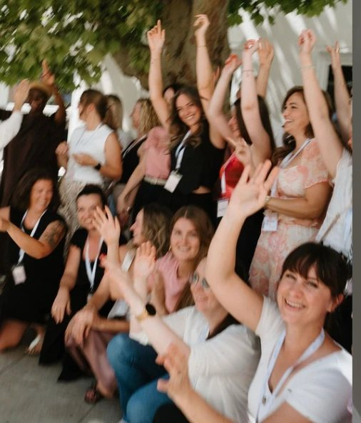
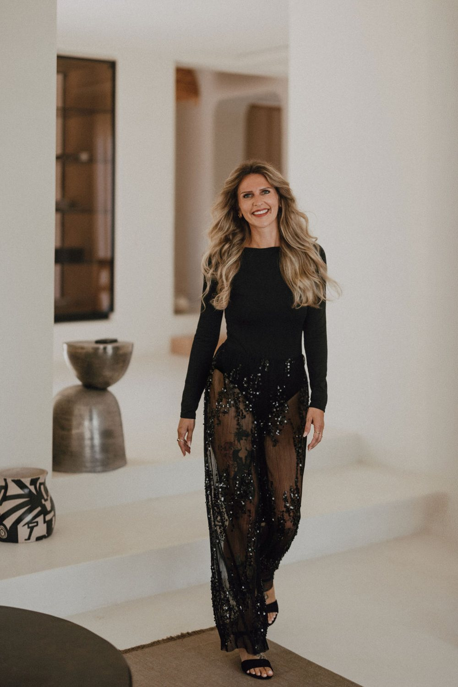

Hi, I'm Sarah.
Unternehmerin · Mentorin · Speakerin
Neueste Folge
#132 Dein Matcha ist keine Altersvorsorge
brandyourvoice. unfiltered · jeden Montag neu
0:00 / 15:42
Für 0 €
Copywriting Masterclass
90 Minuten, die dir zeigen, ob Copywriting 2.0 zu dir passt.
Platz sichern
Echte StimmenErfolgsgeschichten
Was unsere Teilnehmerinnen erzählen.
Zu den Stories
NewsletterProsecco-Date
Jeden Sonntag ehrliche Einblicke hinter die Kulissen, direkt in dein Postfach.
AnmeldenDafür gehen wir hier los
… für ein Leben, in dem du tun kannst, whatever the f*** YOU WANT!
Hier gibt’s kein Entweder-oder. Wir entscheiden uns für das UND. Okay, girl?